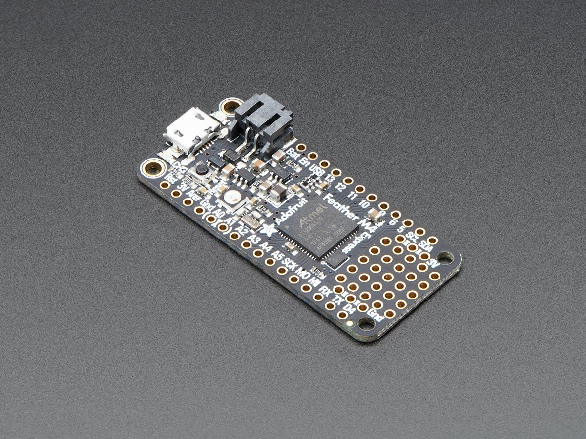
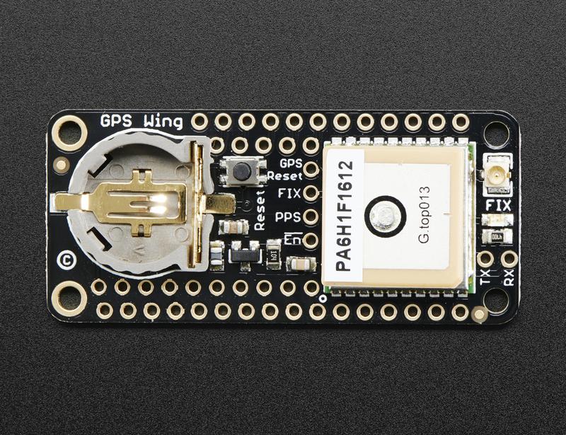
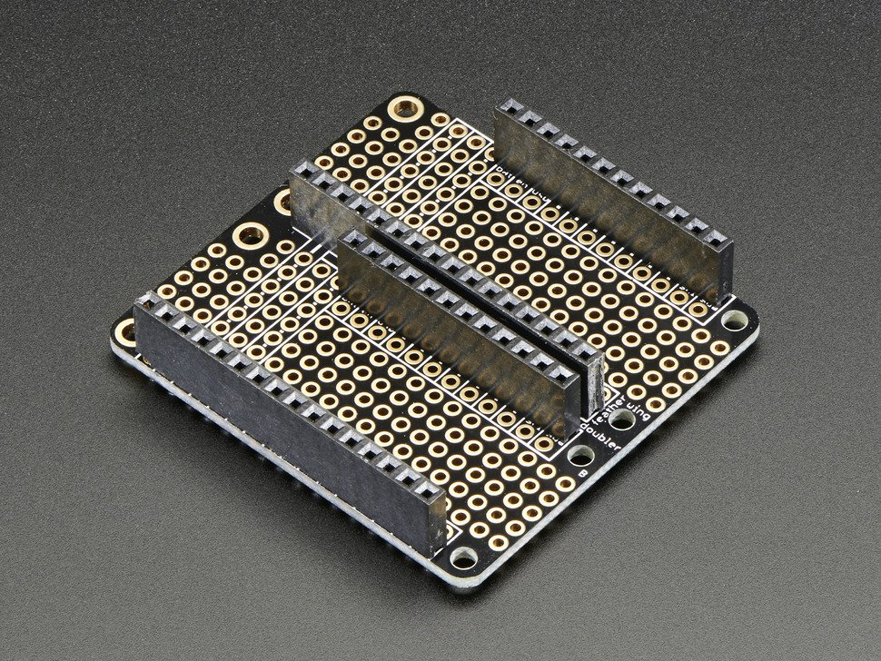
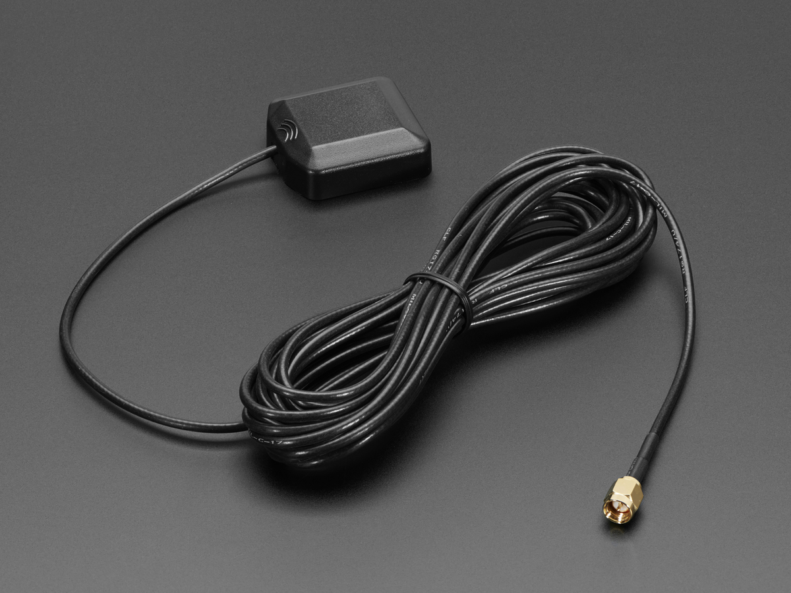
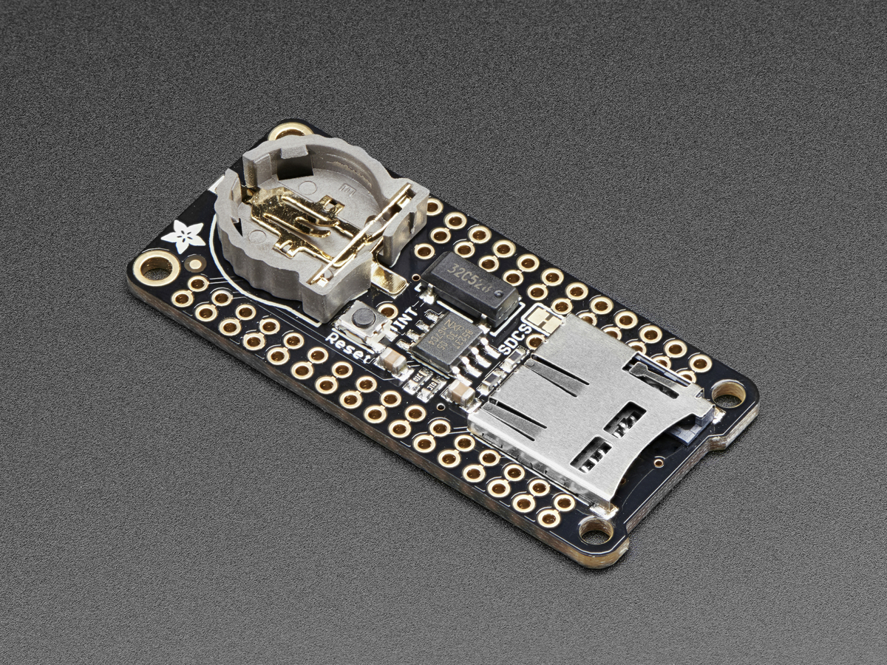

What you will need
- A feather microcontroller board (M0 or m4 work best)

- A GPS FeatherWing

- A FeatherWing doubler

- An active antenna (optional)

- An Adalogger FeatherWing & an SD card (also optional). If you use this, you will need
a feather tripler instead of a feather doubler.
